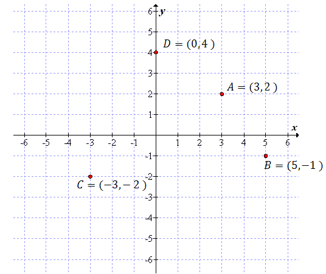
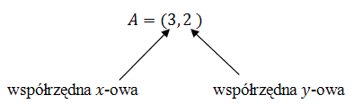

Geometria analityczna
1.
Wstęp do geometrii analitycznej
Wstęp do geometrii analitycznej
Geometria analityczna dotyczy figur umieszczonych w
układzie współrzędnych.
Zadania z tego działu bardzo często polegają
na policzeniu długości odcinka, znalezieniu wzoru funkcji liniowej przechodzącej przez dane dwa punkty,
itp.
Aby móc takie zadania skutecznie rozwiązywać, trzeba przede
wszystkim wiedzieć, jak odczytywać współrzędne punktów w układzie współrzędnych.
W poniższym układzie współrzędnych zaznaczono 4 punkty: A,
B, C i D.
W nawiasie zapisano również ich współrzędne.
 Zawsze
na pierwszym miejscu zapisywana jest współrzędna x-owa, a na drugim y-owa:
 Często
w treści zadania podawane są współrzędne kilku punktów, które są wierzchołkami jakiejś figury.
Rozwiązywanie takiego zadania zawsze warto zacząć od narysowania układu współrzędnych i zaznaczenia
w nim podanych punktów.